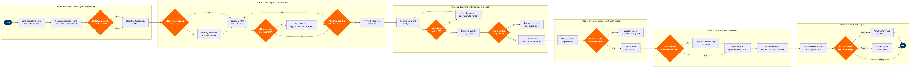

| Step | L4 Step Name | KPI / Target | Pain Point / Risk | Gate |
|---|---|---|---|---|
| 1.1 | Generate rolling parts demand forecast | Forecast accuracy ≥85% vs actual consumption over rolling 90-day window | Unplanned AOG events and fleet configuration changes (e.g. new aircraft sub-type) invalidate historical consumption rates in AMOS, requiring manual demand model adjustment | |
| 1.2 | Calculate reorder points and min/max stock levels | Stock-out rate <2% for rotables; <5% for expendables on a rolling 30-day basis | Lead time variability from OEM suppliers (Boeing, CFM International) causes chronic stock-out events on critical LRUs; AMOS safety stock calculations do not automatically adjust for supplier performance deviations | |
| 1.3 | Classify parts by criticality — AOG, Critical, Routine | 100% of MEL-linked part numbers classified as AOG or Critical within AMOS | MEL revision cycles (typically bi-annual) require manual reclassification in AMOS — no automated sync between regulatory MEL amendments and AMOS part master records | ⚠ |
| 2.1 | Identify approved vendors from Qualified Supplier List | ≥2 approved vendors per critical part number; QSL review completed annually | Single-source OEM-proprietary parts (Boeing BFE components) leave airline exposed to supply chain disruption; SAP Ariba vendor master requires manual synchronisation with AMOS parts database — discrepancies cause PO rejections | ⚠ |
| 2.2 | Issue RFQ or generate purchase order to vendor | PO issuance within 4h of demand trigger for AOG parts; within 5 business days for routine replenishment | AOG parts require emergency PO bypass of standard SAP approval workflow — manual workarounds create audit trail gaps and increase risk of duplicate orders and unapproved spend | ⚠ |
| 2.3 | Validate airworthiness documentation from vendor | 100% of incoming parts accompanied by valid, traceable airworthiness release documentation | Counterfeit parts risk from non-OEM surplus suppliers; AMOS lacks automated verification against FAA/EASA airworthiness database — manual cross-check is time-consuming and error-prone during high-volume receiving periods | ⚠ |
| 3.1 | Receive shipment and verify against purchase order | Receiving accuracy ≥99.5% (quantity and P/N match vs PO) on monthly cycle count | No automated EDI integration with most parts suppliers requires manual goods receipt entry in AMOS, increasing keying errors; shipping damage from non-compliant vendor packaging not identified until unboxing | ⚠ |
| 3.2 | Perform incoming quality inspection on received parts | Incoming inspection completed within 4h for AOG-classified parts; within 48h for routine parts | Inspector availability is a bottleneck during peak maintenance periods (C-check inductions); shelf-life controlled items (seals, O-rings, tyres) may expire during inspection backlog if not prioritised | ⚠ |
| 3.3 | Record serviceable parts into AMOS inventory | Inventory record accuracy ≥99.8% validated by quarterly AMOS cycle count | Dual-entry requirement between AMOS (inventory) and SAP S/4HANA (financial asset register) for rotable parts creates reconciliation overhead; serial number capture omissions cause rotable tracking gaps during part-swap events | |
| 4.1 | Store parts per specification and regulatory requirements | Storage compliance audit pass rate ≥98% at monthly internal stores inspection | Constrained line station stores lead to inadequate segregation of serviceable and unserviceable parts; ESD-sensitive avionics LRUs improperly stored in non-ESD zones cause latent damage not detectable at installation | |
| 4.2 | Monitor shelf-life and time-controlled items for expiry | Zero serviceable parts issued or installed past expiry date; shelf-life compliance rate 100% | AMOS shelf-life alerts require manual acknowledgement — items can expire unnoticed during high workload periods; system does not automatically quarantine parts on expiry date without manual configuration per part class | ⚠ |
| 5.1 | Issue parts against approved maintenance work orders | Pick accuracy ≥99.5%; parts issue turnaround <30 min for AOG work orders | Approved alternate part number substitution (when requested P/N is unavailable) requires real-time engineering authority approval — delays issue when engineers are unavailable on shift, potentially extending AOG ground time | ⚠ |
| 5.2 | Trigger reorder when stock breaches reorder point | Reorder trigger-to-PO issuance lead time <2 business days for routine; <4h for critical-classified parts | AMOS-to-SAP Ariba integration operates on overnight batch synchronisation — same-day reorder triggers do not generate POs until next business day, requiring manual intervention for critical stock-outs | |
| 6.1 | Identify and segregate unserviceable and surplus parts | Unserviceable inventory disposition completed within 90 days of unserviceable tagging | Accumulation of unserviceable rotables awaiting shop repair decisions ties up significant working capital; AMOS has no automated escalation for aged unserviceable items — management visibility relies on manual report generation | ⚠ |
| 6.2 | Process disposal, scrap, or vendor return with credit | Vendor return credit recovery ≥90% of part value for in-warranty components; scrap processing completed within 30 days of disposition decision | Warranty claim processing with OEMs (Boeing, CFM) averages 45–90 days; manual credit note reconciliation between AMOS and SAP Accounts Payable leads to write-off errors and unrecovered warranty value |